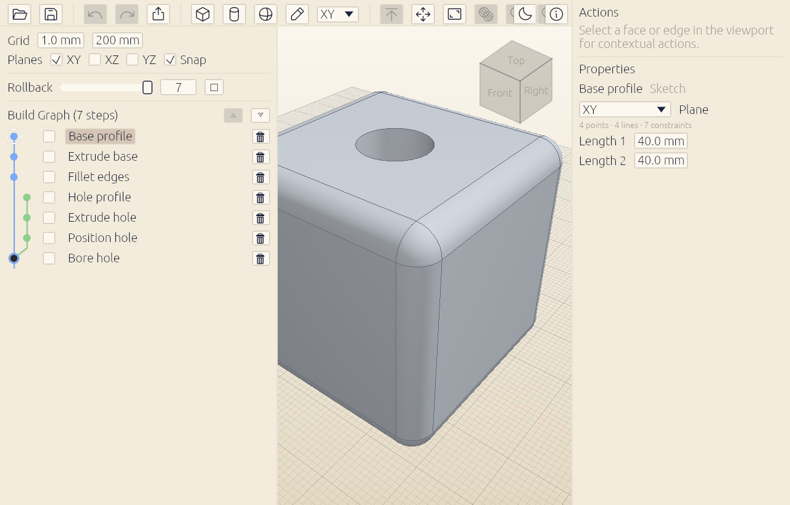

Grab it and drag
Select a face and push/pull it, resize with handles, snap to a grid, group objects and move them together. Direct and immediate — no menu-diving.
Free & open-source CAD · MPL 2.0
Cadette is parametric CAD for makers, built on OpenCASCADE — the industrial kernel behind FreeCAD — with none of the ceremony. Model it, change any step later, print it.
Apple silicon (.dmg) · no account, no telemetry, no cost.
Tinkercad's simplicity. Shapr3D's spunk. FreeCAD's kernel. Nobody's subscription.

Select a face and push/pull it, resize with handles, snap to a grid, group objects and move them together. Direct and immediate — no menu-diving.
Built on OpenCASCADE — the engine behind FreeCAD. True B-rep solids with exact faces, edges, fillets and booleans. Real geometry, not meshes.
Every action lives in the Build Graph — a history you can re-open, tweak, re-order, or roll back. Change an early step and the model rebuilds. Nothing is baked.
Draw with a real pen tool — lines and Bézier curves — and pin down what matters with dimensions and constraints. Extrudes and revolves stay tied to the sketch, so change a number and the part follows.
Export solid, closed STLs ready for any slicer — and save the full parametric project alongside them, so you're never stuck with a flattened mesh you can't edit.
Released under MPL 2.0 — yours to use, study, and build on. No account, no telemetry, no cost. Development happens in the open on GitHub.
Cadette is an early, single-developer build — macOS-only for now, and still missing things like STL import. But it isn't built on a toy: the kernel underneath is OpenCASCADE, and the feature set — push/pull, constraint sketching, fillets, revolves, sweeps — is growing without giving up the directness. See what's next →